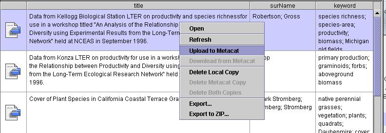
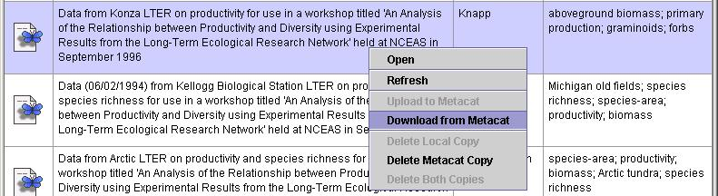

Morpho
User Guide
|
Morpho
User Guide
|
||||||
| KNB Home | Data | People | Informatics | Biocomplexity | Education | Software | |
| The Main Morpho Screen |
| After the Connection Dialog is closed (either
by Connecting or clicking the Cancel button) the main Morpho window will
appear. This window should resemble the one shown below. This screen is
labeled "My Data (higgins)" where 'higgins' will be replaced by the current
user name. The window displays all the data packages 'owned' by the current
user. When Morpho is used for the first time there will be a single entry
in the table, as indicated below. This is a example of a fictitious data
package created to help the new user. After the user has created his/her
own datapackages, they will all appear on this screen when Morpho is started
up.
Morpho Primary Window - Initial Screen Before any Data Packages Have
Been Created
After the user has created several data packages, this 'My Data' screen will have a number of rows in the table as shown below.
Morpho Primary Window - Screen After Several DataPackages Have Been
Created Each row in the table represents a "Data Package". This data package consists of a collection of data and various descriptions of that data (i.e. metadata). You can get more details about the data package by 'double clicking' on the row of interest. Also, clicking the right mouse button while over a row will bring up a popup menu that allows the user to operate on the selected data package. |
| Controlling Packages |
|
You can control your data packages by right clicking on them. When you right click on a package, a menu is shown that gives you options to move your package from your local machine to a Metacat server (or visa versa), to delete your package or to open your package. If a file is located only on your local machine (denoted by the file folder icon on the left side) you can upload it to your Metacat server by right clicking and choosing 'Upload to Metacat' from the menu. If a package is located only on your Metacat server (denoted by the butterfly icon on the left side) you can download it to your local machine by right clicking on the package and choosing 'Download from Metacat' from the menu. Note that if both the folder icon and the butterfly icon are present, you cannot upload or download the package because it is already in both locations. The other options you can use from this menu include:
|